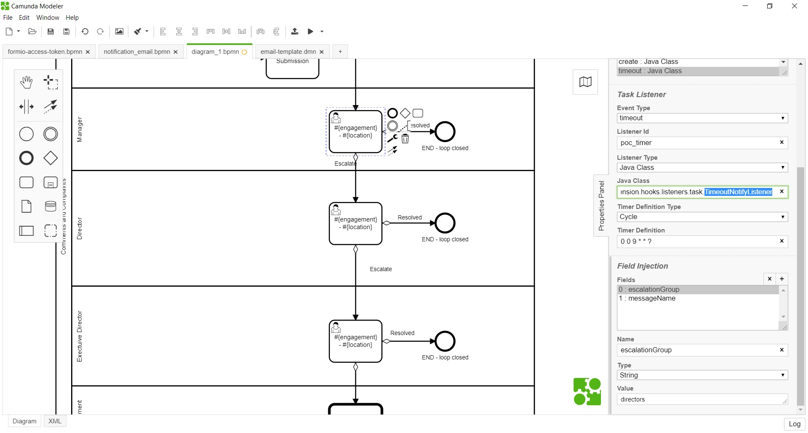
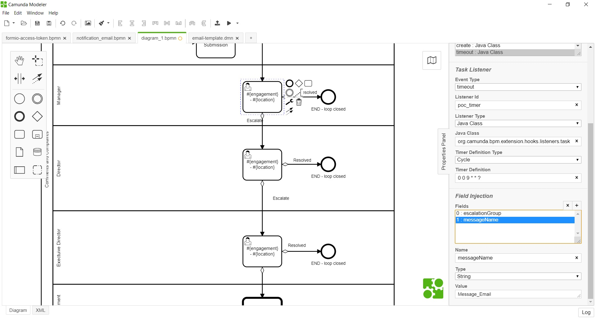

<article class="docs-article">
    <section class="docs-section" id="listeners">
        <div>
            <h2 id="timeout-notification-listener">Timeout Notification Listener</h2>
            <hr>
            <p><strong>org.camunda.bpm.extension.hooks.listeners.task.TimeoutNotifyListener</strong>
            </p>
            <p>This component sends an email reminder a day before task due date, and escalation
                email on the day
                after due date.</p>
            <h3 id="table-of-content">Table of Content</h3>
            <ul>
                <li><a href="#type">Type</a></li>
                <li><a href="#how-it-works">How it Works</a></li>
                <li><a href="#how-to-use">How to Use</a></li>
            </ul>
            <h3 id="type">Type</h3>
            <p>Task Listener</p>
            <h3 id="how-it-works">How it Works</h3>
            <p>This component intended to use only along with task due date.</p>
            <p>This component relies on listed parameters.</p>
            <ul>
                <li><strong>escalationGroup</strong> (Listener Field) : Recognized groupName within
                    Camunda.
                    <code>Mandatory = Yes</code>
                </li>
                <li><strong>messageName</strong> (Listener Field) : This refers the message name
                    from
                    <strong>notification_email.bpmn</strong> . <code>Mandatory = Yes</code>
                </li>
            </ul>
            <p>The listener is expected to be configured on task event <strong>timeout</strong> with
                any desired
                timer definition.<br>Upon configuration, For reminder: a day before due date;email
                is sent. </p>
            <pre><code>&gt; <span class="hljs-keyword">For</span> assigned tasks; reminder <span class="hljs-keyword">is</span> sent <span class="hljs-keyword">to</span> user.  
&gt;  <span class="hljs-keyword">For</span> unassigned tasks; reminder <span class="hljs-keyword">is</span> sent <span class="hljs-keyword">to</span> <span class="hljs-keyword">group</span>.  
</code></pre>
            <p>Also, for escalation: a day after due date; email is sent. </p>
            <pre><code>&gt; <span class="hljs-keyword">For</span> both assigned <span class="hljs-keyword">and</span> unassigned <span class="hljs-keyword">task</span>, it uses the configured **escalationGroup**.   
</code></pre>
            <p>Please note this component uses the process <strong>notification_email.bpmn</strong>
                and, it will
                recognise only the reserved category <strong>activity_reminder</strong> and
                <strong>activity_escalation</strong>.
            </p>
            <h3 id="how-to-use">How to Use</h3>
            <p>Below snapshot shows how <strong>TimeoutNotifyListener</strong> can be used in
                process.</p>
            <h5
                id="timeoutnotifylistener-being-configured-on-timeout-of-task-with-fields-configured-for-notification-">
                TimeoutNotifyListener being configured on timeout of task; with fields configured
                for notification.
            </h5>
            <p></p>
            <p><br>
                Click here to know about <a
                    href="Form Submission Listener.html">FormSubmissionListener
                </a>

            </p>
            </p>

        </div>
        </section>
        </article>
        